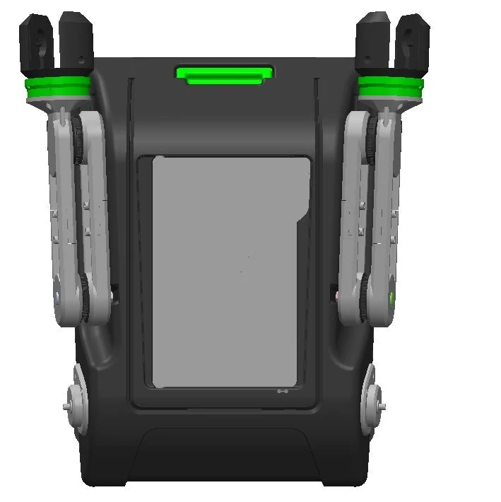
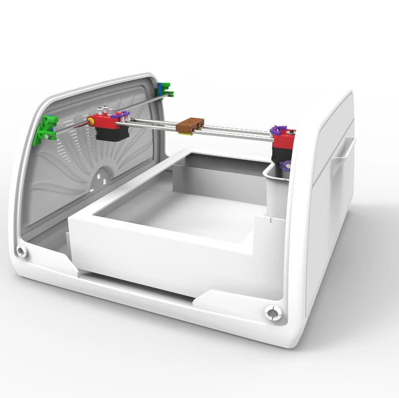

Since I was a kid, I've always wanted to be an engineer, even if I wasn't sure exactly what kind. Like many tinkerers, I took apart record players and even “accidentally” formatted my friend’s father’s work PC!

Redesigned tactile feedback for a haptic VR suit — free finger movement, no compromises.
View project →
Human-powered arm system for a film prop. No motors, no electronics — pure geometry.
View project →
Compact Cartesian mechanism fitting all motorised components into a pre-existing enclosure.
View project →My professional and academic journey has taken many twists and turns, driven by a sense of exploration as I honed in on what truly inspires me. I've always believed that the best job is one where you get paid for what you love. Without realising it, I picked up skills outside of formal work — like learning Turbo Pascal at 16, teaching myself Perl, and even selling an HTML website. Technology has always been a playground for me; a place to explore, experiment, and have fun.
In 2012, I returned to university and joined the London Hackspace (LHS), a community that fuelled my passion for hands-on learning. While there, I gained experience programming in C for TI microcontrollers, using a lathe, and operating laser cutters and 3D printers. Looking back, it was like a puzzle coming together — I wish someone had told me I was getting into mechatronics!
What drives me most is problem-solving, innovation, and continuous learning. There's a joy in figuring out how things work, and that's what keeps me engaged with technology. Outside of work, I've always been into sports. Recently, I've found my way back to skateboarding, which feels like meditation on wheels.
I was born in Spain, grew up in Chile, and have lived in the Netherlands and the UK for over two decades. Currently tinkering with Python and the ChatGPT API, aiming to build an AI prompt engine. Last year I built my first RC car, WombleBot, entirely from scrap.
Specialised in early-stage product development, focusing on problem-solving and generating creative ideas that translate into robust designs. Proficient in SolidWorks and Fusion 360, with experience in complex assemblies that prioritise ease of manufacture and functionality.
Applications: Early-stage product development, assembly design for manufacturability, prototype creation.
Extensive experience transforming concepts into functional prototypes through 3D printing (SLA), CNC machining, EDM (with partners), and manual crafting. Familiar with lathe and milling operations, and injection moulding (with partners).
Applications: Developing and refining prototypes, validating mechanical and electronic integrations.
Experienced in integrating mechanical systems with electronic components, focusing on temperature sensors, end-stop switches, motors, and heaters for system control.
Applications: Developing automated systems, designing intelligent systems that enhance functionality and efficiency.
Experienced in programming microcontrollers using Embedded C on Texas Instruments platforms and Arduino. Proficient with Python for scripting, debugging via GDB, Raspberry Pi development, and API integration.
Applications: Closed-loop on/off heat control with hysteresis using SSR drivers, AI query engines, data automation.
Experienced in selecting and optimising materials to meet specific performance, durability, and cost-effectiveness requirements. Worked with high-performance materials including PEEK plastic and specialised aluminium alloys.
Applications: Enhancing product longevity, reducing manufacturing costs, optimising material use for specific applications.
Proficient in MATLAB and familiar with Octave. Completed ANSYS coursework; primarily uses SolidWorks for thermal and stress analysis. Foundational Simulink knowledge; hands-on LabVIEW experience for data acquisition.
Applications: Thermal and stress analysis, simulation for design optimisation, engineering reports.
Engaged in diverse design engineering projects across various industries, specialising in early-stage product development, mechanical design, and system integration.
Focused on mechanical design, prototyping, and system integration for innovative products, working closely with cross-functional teams.
Developed environmentally viable technologies for plastic processing, focusing on power efficiency and mechanical design optimisation.
Open to new projects and collaborations.